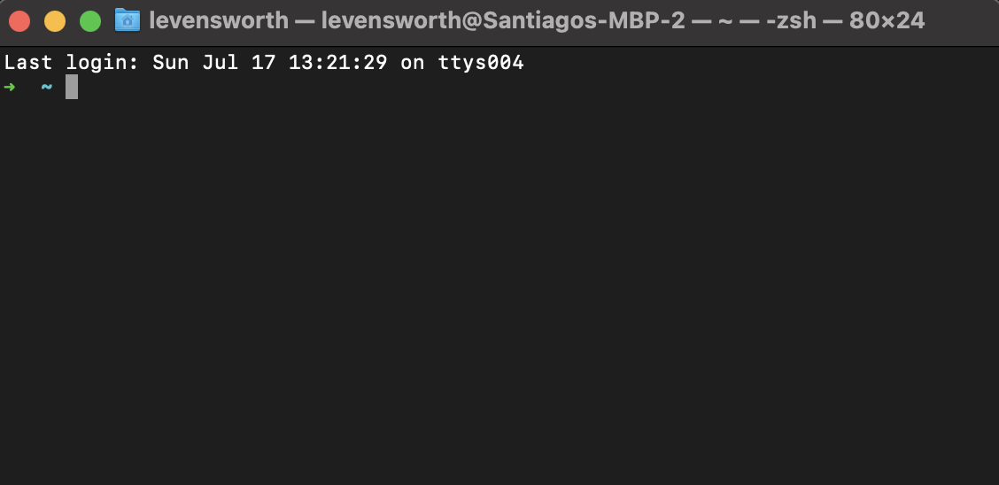
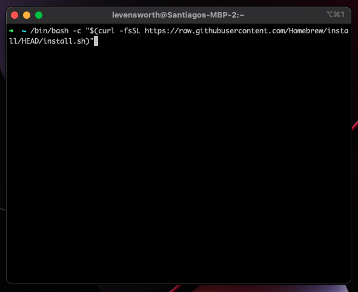

MacOS Python Installation
Esta sección es una guía para generar un entorno de desarrollo necesario para el curso de pensamiento computacional el cual constará de los siguientes recursos:
Homebrewcomo package managerPyenvcomo manejador de versiones de PythonVS Codecomo editor de texto
Al finalizar esta guía contaremos con un editor de texto y el interprete de Python correspondiente para esta materia.
Utilizaremos Python en su versión 3.8.13 por lo que es importante seguir estos pasos para hacer un correcto setup.
Info
En este tutorial hablaremos de la Terminal, esto es un programa especial que viene incluído dentro de nuestra computadora y se utiliza para interactuar con nuestro sistema operativo. Antes que existieran las Graphical User Interfaces, la gente utilizaba estas terminales de texto para utilizar la computadora. Siempre que escuchemos CLI, tenemos que recordar que esto se refiere al termino Command Line Interface. Lo cual hace referencia a aquella época en la que la gente se comunicaba con la computadora utilizando la terminal. Entonces si un programa debe tener una CLI o debemos utilizar la CLI de un programa, simplemente nos estan diciendo que debemos ejecutar el programa o comando desde una terminal.
La terminal por defacto que viene con MacOS se llama Terminal y la puede buscar en el launchpad. Al abrirla, veremos algo parecido a esto: 
Lo primero que veremos es una flecha la cual nos indica donde está el cursor (donde estamos escribiendo). Dentro de esta pequeña terminal, solo funciona el teclado así que no intenten hacer click con el mouse para moverse.
1. Xcode Command Line Tools.
En MacOS existe un entorno de desarrollo creado por Apple llamado Xcode, el mismo se utiliza para crear apps de IOS o MacOS. En nuestro caso, no nos interesa esta propiedad, pero si nos interesa los compiladores de código que contiene los cuales son necesarios por Python para correr asi que seguiremos los siguiente pasos:
-
Abrir una terminal
-
pegar en la terminal el siguiente comando:
xcode-select --install -
Apretar ENTER, una ventana aparecerá indicando que queremos instalar la suite de programa de desarrollo. En caso que dicho programa ya esté instalado, nos dirá esto mismo y podemos pasar a la siguiente sección.
-
Seguir los pasos de instalación de dicha ventana, esto puede tomar un tiempo considerable y es un paso necesario.
-
Una vez finalizado, cerrar la terminal.
2. Homebrew: The missing package manager.
Cuando programamos muchas veces necesitamos instalar packages que son algo parecido a descargar un "programa" especial que tiene
muchas funcionalidades especiales.
Cuando queremos instalar un programa, normalmente iriamos a un una web donde descargamos dicho programa (AppStore en Apple)
en el caso de los packages esto es utilizar un package manaer (programa que viene a ser como el app-store para programadores.
Hombrebrew es el package manager más utilizado en el entorno de MacOS y es el que utilizaremos por default para instalar los programas de programación que necesitemos.
-
Nos dirigimos a la main page => brew
-
Copiamos el comando de descarga:
/bin/bash -c "$(curl -fsSL https://raw.githubusercontent.com/Homebrew/install/HEAD/install.sh)" -
Abrimos una terminal y pegamos dicho commando, tal que nos quede de la siguiente manera y damos enter:

Este paso puede demorar un rato largo. Porfavor ser paciente!
-
Luego de que finalize el anterior comando, veremos de correr el siguiente comando en la terminal: $> brew doctor No nos importa el resultado de este comando (muy probablemente indique un par de
warnings), lo que estaría mal es un mensaje del estilo:commando not found. En ese caso debemos avisar a los profesores y seguir sus indicaciones.
Ya contas con los programas necesarios para poders correr Python. En la próxima sección veremos como instalar el lenguaje
de programación y sus utilidades.
3. PyEnv: Python Version management.
Un poco de contexto:
A esta altura, te estarás preguntando "como puede ser tan difícil tener lo necesario para programar? me están queriendo hackear la computadora?". Todas estas preguntas son completamente válidas y entendibles para quien no está acostumbrado a lidiar con los problemas de programar. La realidad es que todos los pasos que seguimos hasta ahora no son específicos para Python, sino que descargamos herramientas necesarias para cualquier tipo de programación que hagan y les serán útiles en el resto de la carrera! Si pensamos en una analogía de cocina, donde programar es cocinar. Lo que acabamos de hacer es comprar los utencilios de cocina, que son necesarios para cocinar.
Ahora, Python es un lenguaje y como todo lenguaje (español, chino, java, javascript, sql, etc) no necesita más que te acuerdes de la sintaxis para poder escribirlo. Es decir, no importa el lenguaje (sea de programación o no) lo único que necesitamos para saberlo es entender su sintaxis. Habiendo hecho esta aclaración, ahora si podemos concentrarnos en la particularidad de los lenguajes de programación .... y es que las computadoras los entienden y nos permiten comunicarnos con ellas. Esta particular propiedad de los lenguajes de programación no ocurre por arte de mágia sino que se debe a la existencia de traductores (programas que traducen los comandos escritos en lenguajes de programación que conocemos a código binario). Estos traductores son específicos para cada computadora y para cada lenguaje (es decir que Python tiene un traductor, C tiene otro, Java tiene otro, etc) por lo que debemos descargar el interprete correspondiente para poder finalmente comunicarnos con nuestra computadora.
Ahora si, con el contexto de los lenguajes de programación y como estos se comunican con la computadora pasemos a descargar e instalar
el traductor de Python. Para esto vamos a utilizar un paquete especial llamado pyenv, este es un programa especial que nos instala
todo lo necesario para correr el traductor de python. La razón de porque utilizamos pyenv y no descargamos directamente Python es
porque el lenguaje tiene muchas versiones. Pensemos en version del lenguaje como ediciones del diccionario español de la RAE. Todos los
años la RAE revisa el leguanje español y determina que palabras se eliminan y cuales se incorporan como parte del lenguaje. Python
cuenta con la Python Software Fundation que se encarga de revisar el lenguaje y van modificando cosas del mismo. A diferencia del
español, un traductor de una versión de Python no sabe de las otras versiones por lo que hay ciertos comandos que son específicos de
cada versión y es importante tener una forma de manejar las diferentes versiones de Python. PyEnv es un manejador de versiones de
Python, el cual se encarga de menejar la versión de Python por nosotros y por eso es conveniente su uso.
Para instalarlo seguiremos los siguientes pasos:
-
Abrir una terminal
-
Ejecutar el siguiente comando en la terminal:
brew install pyenv -
Cerrar y volver a abrir la terminal
-
Ejecutar el siguiente comando para instalar la versión
3.8.13de Pythonpyenv install 3.8.13 -
Ejecutar el siguiente comando para dejar esta versión como la default:
pyenv global 3.8.13De esta manera cada vez que invoquemos a Python utilizaremos la versión correcta.
-
Podemos probrar que python que todo quedó correctamente instalado ejecutando
pyenv globallo cual debería decirnos:
$>3.8.13 -
Hacer un update de las depencencias, desde terminal:
pip install pip --upgrade pip install pipenv -
Con todo esto, ya se encuentran con su primera versión de Python instalada y lista! Pueden ejecutar el código para ver la filosófía de Python:
python -c "import this"
4. VS Code: Entorno de desarrollo.
Ahora que contamos con un traductor de python ya casi somos programadores, solo nos falta:
- Ver la saga completa de Star Wars
- Ropa hipster
- Un sillón gamer
- Comentar en toda discusión de Twitter sobre que lenguaje de programación es el mejor y porque es Python
Pero dejando todos los estereotipos de lado, nos falta un detalle para poder comenzar nuestra carrera de programación y es un editor de texto. Tal como comenté más arriba, no hay nada especial sobre las palabras que componen un lenguaje de programación por lo que nos podriamos preguntar "porque no escribirlo directamente en Word?". Esta pregunta es completamente válida y la respuesta involucra entender un poco sobre formatos de archivos.
Si utilizamos Word o Excel veremos que el archivo que genera el editor tiene una "extensión" del tipo .doc o .xsls entre otras.
Esta terminación es una forma que tienen los editores de avisarle al usuario (nosotros) que el archivo está escrito en un formato específico. Si
intentamos abrir dicho archivo sin el editor correspondiente, veremos un montón de símbolos raros y no entendermos nada de lo que esté
escrito porque se encuentra en formato binario. Para programar, en cambio, utilizamos lo que se llama texto plano que refiere a
que no utilizamos ningun editor especial para escribir dicho código.
Como por defautl MacOS no cuenta con editores de texto plano (TextEdit tiene la funcionalidad pero no es sencillo) utilizaremos un
editor nuevo que es altamente utilizado y versátil llamado "VS Code".
Para instalarlo debemos seguir los pasos descritos en la sección de instalación dentro del manual de Microsoft => Tutorial de instalación